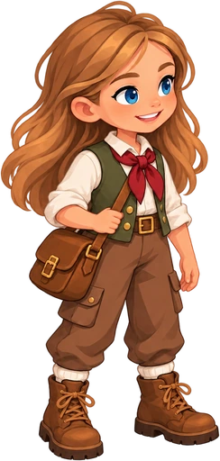

24 цельных кадра по принятой 3D-походке. Это пилот рисовки: привязка кадров к движению в игре ещё проверяется.

Загрузка кадров…
Все персонажи извлечены целиком, без растягивания частей тела и индивидуального изменения роста. Для совмещения использована пробная разметка видимых контуров обуви. Она не доказывает точное положение скрытых суставов; кадр 7 имеет интерполированную точку регистрации. Эта петля не является проверкой отсутствия скольжения или финальной игровой анимацией.